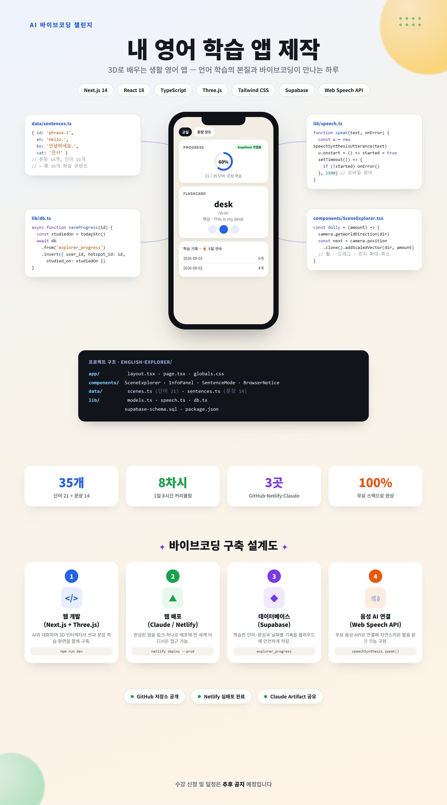
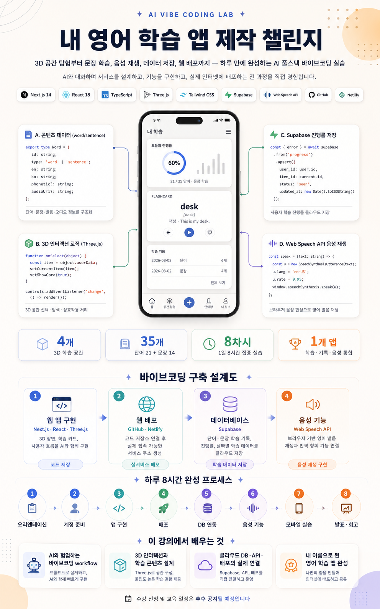
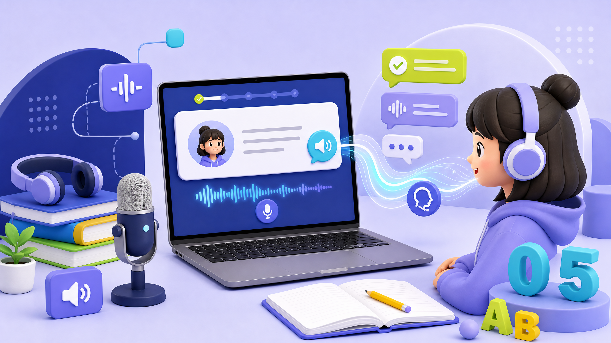

01 / APP EXPERIENCE
3D 장면을 직접 탐험하는 기본 앱
교실·공항·카페·체크인 카운터를 탐색하며 생활 단어와 문장을 듣고, 문장 모드와 학습 기록을 경험합니다. 로그인 없이도 브라우저에서 먼저 체험할 수 있습니다.

3D 장면을 탐색하며 단어와 문장을 익히고, 음성으로 듣고 말하며, 학습 기록과 복습까지 이어지는 영어 학습 프로젝트입니다. 기존 앱과 강의·고도화 자료를 이제 하나의 페이지에서 확인할 수 있습니다.



교실·공항·카페·체크인 카운터를 탐색하며 생활 단어와 문장을 듣고, 문장 모드와 학습 기록을 경험합니다. 로그인 없이도 브라우저에서 먼저 체험할 수 있습니다.

필수 사이트 계정 생성, AI와 함께 웹앱 구축, 웹 호스팅·온라인 배포, 클라우드 DB 연동, TTS API, 스마트폰 홈 화면 설치까지 단계별로 따라 합니다.

Supabase 이메일 매직 링크와 Google 로그인, 익명 기록 병합, 사용자별 RLS, 적응형 복습, 회상 퀴즈, PWA 오프라인 기반, 접근성, 말하기 연습을 별도 고도화 모듈로 제공합니다.
기존 기본 강의와 중복되지 않도록 인증·동기화·적응형 복습·퀴즈·PWA·접근성·음성 인식 구현을 8차시 실습으로 분리했습니다. 기본 앱을 만든 뒤 확장할 때 사용합니다.

 CH 01필수 계정 생성
CH 01필수 계정 생성
CH 05TTS·음성 학습 CH 08완성·공유
CH 08완성·공유학습자는 결과물을 사용하고, 수강생은 같은 결과물을 직접 만들며, 고도화 과정에서는 인증·복습·PWA까지 확장합니다.